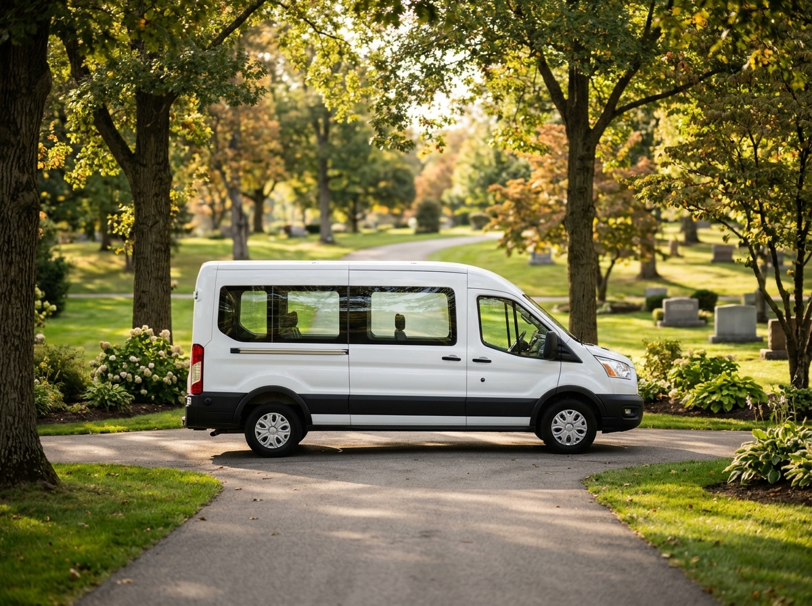
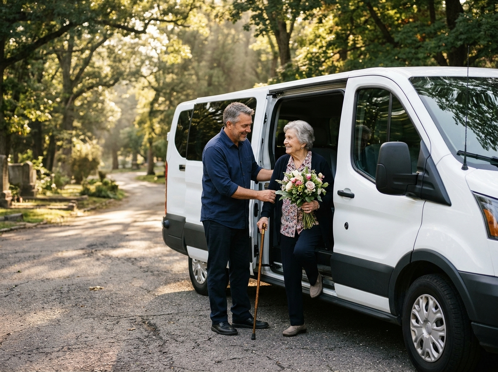
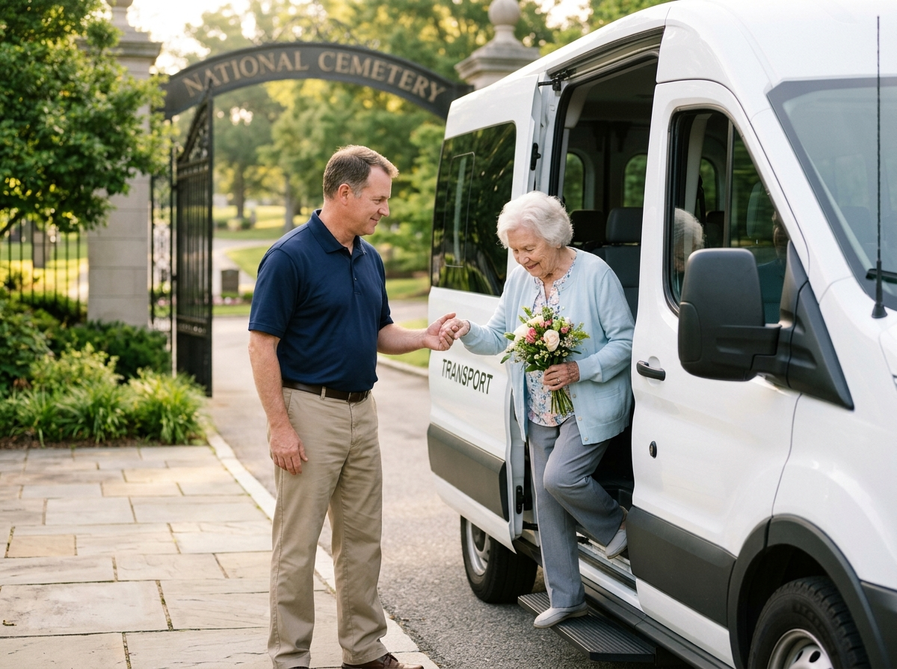

Door-to-Door Pickup
Picked up safely at your home or senior community and brought right back to your door.
Providing compassionate transportation with dignity and care — helping seniors, spouses, veterans, and families visit the resting places of the ones they hold dear.
“Many people need not only a ride to the cemetery to visit their loved one, but someone who understands why the visit matters.”

For a spouse, parent, veteran, or child, standing beside a loved one’s resting place brings comfort that nothing else can replace. Yet when driving becomes difficult—or family members live far away—those cherished visits often stop.

Memories In Motion Transportation Ministry bridges that distance. We serve individuals and families who need more than a standard taxi or shuttle—we offer a calm, reverent ministry experience where your stories are welcomed, your pace is honored, and your loved one’s memory is treated as sacred.
Providing Compassionate Transportation with Dignity and Care — Because Every Memory Deserves a Visit.
Picked up safely at your home or senior community and brought right back to your door.
Gentle arm-in-arm assistance from the van all the way to your loved one’s marker.
Quiet privacy or comforting companionship—take all the time your heart needs.
Optional stops along the way for fresh flowers, wreaths, or small American flags.
Rooted in faith, service, and deep respect for every life remembered.
To serve seniors, widows, veterans, and families by providing safe, dependable, and compassionate transportation to cemeteries and memorial sites—ensuring that every person has not only a way to visit their loved one, but a caring companion who understands why the visit matters.
To build a compassionate Northeast Ohio community where age, mobility challenges, or lack of transportation never stand between a grieving heart and the resting place of a cherished family member or fallen comrade.
Whether you are visiting a nearby parish cemetery or traveling to a national veterans memorial, every trip is tailored to your comfort, schedule, and mobility needs.
Scheduled door-to-door transportation in a clean, comfortable ministry van. Your driver remains on-site so you never feel rushed while sitting, praying, or tending to a loved one’s resting place.

Dedicated round-trip excursions to honor fallen servicemembers, including regular trips to Ohio Western Reserve National Cemetery.
Learn about Veteran tripsReserve visits for birthdays, wedding anniversaries, Mother’s Day, Father’s Day, Memorial Day, and Veterans Day.
Schedule a holiday visitA compassionate attendant to walk beside you, help locate headstones, listen to cherished memories, or share a quiet prayer.
Request a companionConvenient en-route stops to pick up fresh floral arrangements, seasonal wreaths, or small American flags—plus help placing them.
Add a floral stopPatient step-in and step-out van support, walker and folding-aid assistance, and steady guidance along cemetery pathways.
Arrange mobility careReliable rides for seniors or family members who need safe transportation to attend a funeral, committal, or unveiling service.
Book service transportMany of the families we serve have loved ones laid to rest at Ohio Western Reserve National Cemetery in Seville, Ohio. Because the drive from Solon and Greater Cleveland can be challenging for seniors and spouses of veterans, we provide dedicated round-trip transportation directly to the cemetery grounds.

“We remember their service, and we walk beside the families they loved.”
Assistance locating the exact section, row, and white marble headstone or columbarium niche.
Special remembrance trips for spouses, Gold Star families, and fellow veterans visiting comrades.
Gentle physical support walking to the marker to place American flags, wreaths, or fresh flowers.
Designed to be simple, unhurried, and stress-free for seniors, families, and care coordinators.
Let us know who you would like to visit and your preferred date using our online form, email, or fax.
We review your pickup address, cemetery destination, mobility needs, and any flower or flag stops, then confirm your schedule.
Your driver arrives at your door, assists you gently at the cemetery for as long as you need, and brings you safely home.
Fill out the details below and we will prepare your visit request.